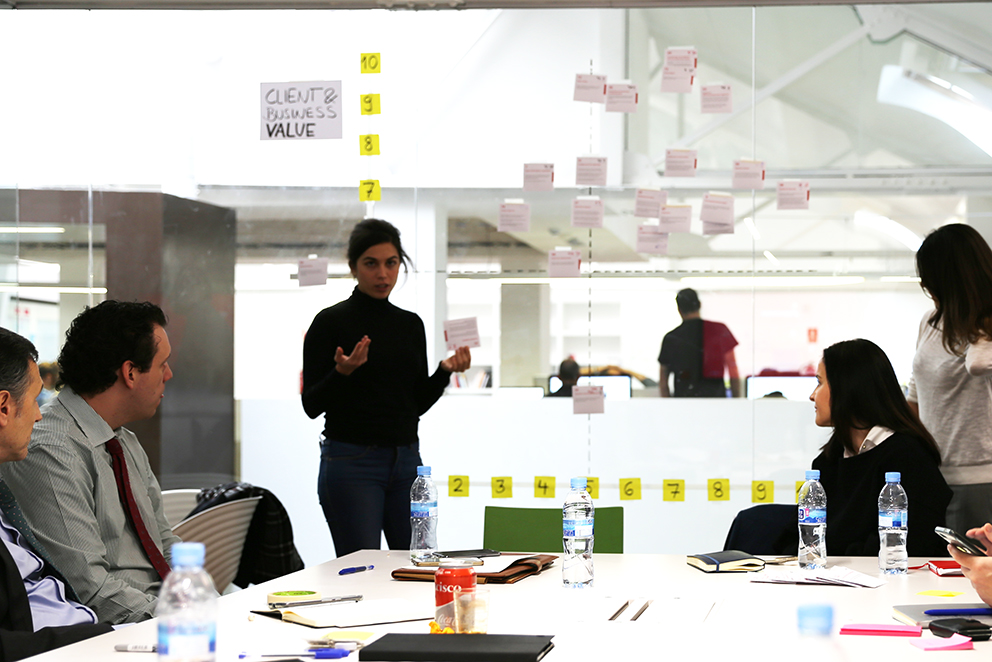
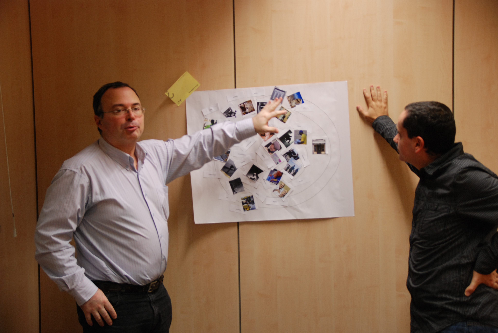
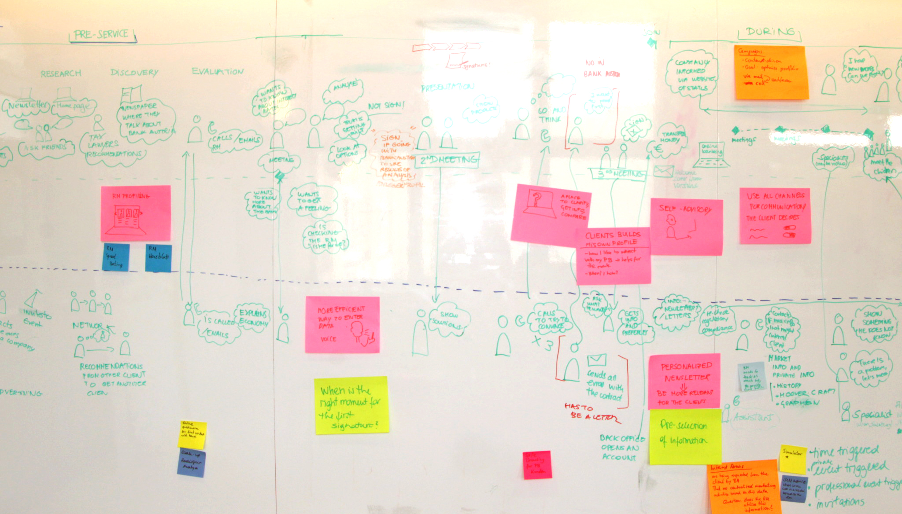

Service design and design thinking methodologies.
- Journey mapping.
- User modelling: personas, scenarios, empathy maps.
- Blueprinting.

Creative facilitation and presentation.
- Design and run different types of workshops: ideation and design thinking sessions, client workshops, co-creation sessions.
- Prepare and create workshop exercises.
- Create presentations using storytelling and present work to clients.
- Support sales activities.

Research and testing.
- Design the best research approach and technique for the goal of the project or hypothesis we want to test.
- Conduct interviews and facilitate co-creation workshops and discussion groups.
- Onservational research and shadowings.
- Design participatory design sessions.
- Create interview exercises and research material such as cultural probes kits, diaries, etc.
- Analyze research results and transform them into actionable insights.
- Design and conduct Usability and concept testing sessions and distill the results into action points.

Making concepts tangible.
- Transalte user needs into UX concepts.
- Concept creation and ideation .
- Wireframing.
- Information architecture.
- Define user task flows and interaction models.
- Creation of low-to-medium fidelity prototypes which can be used to test product and service ideas.

Visualizing
- Create quick skecthes of ideas and concepts.
- Visual thinking.
- Storytelling.
- Simple illustrations to showcase work or create nicer deliverables.
